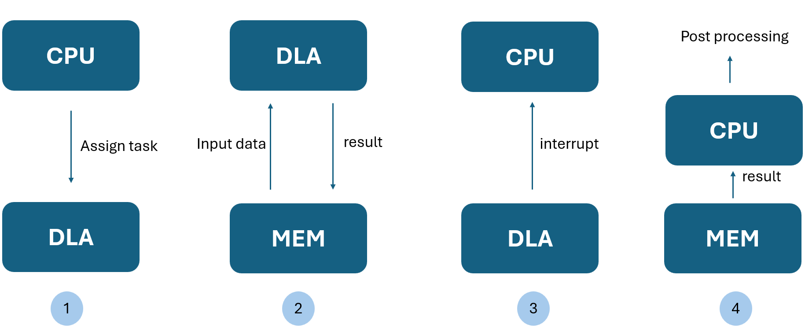
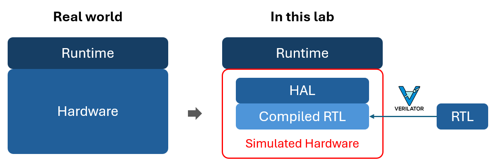
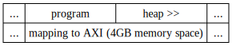
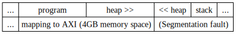
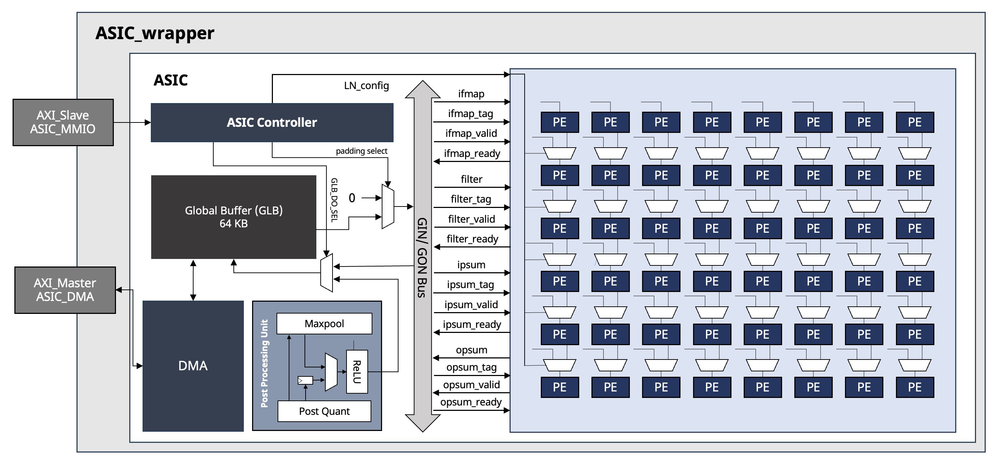
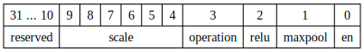
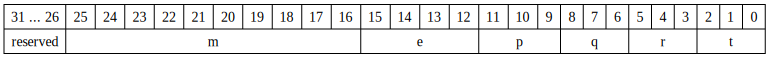
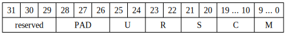
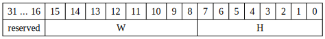
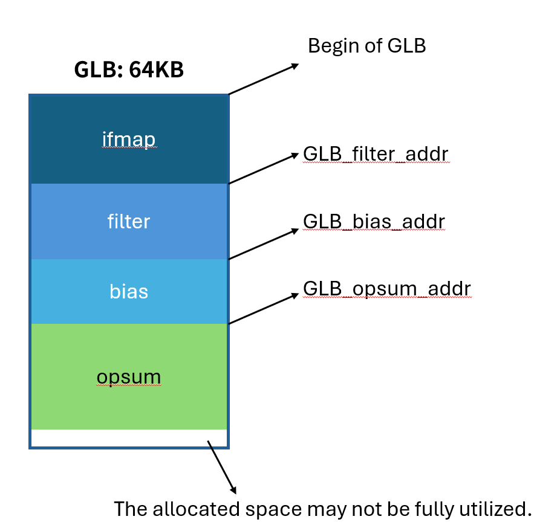

Lab 4 - Runtime and Performance Profiling
Overview
In this lab, we will implement a software driver to enable integration and operation of the previously designed hardware accelerator with the host system. Through mechanisms such as memory-mapped I/O or interrupts, we establish control and data communication between the CPU and the accelerator. The driver acts as a critical interface layer between the runtime system and the hardware accelerator, exposing low-level register or memory access as high-level software APIs. The runtime, which orchestrates the overall inference flow, leverages the driver to configure the accelerator, transfer data, and retrieve results. This separation of concerns allows the runtime to focus on model-level control logic, while the driver handles hardware-specific interactions. This architecture enables us to evaluate the performance gains provided by the accelerator during real model inference. Additionally, we investigate the feasibility and effectiveness of optimization techniques for accelerating inference in the absence of hardware acceleration. Through these experiments and analyses, we aim to gain a comprehensive understanding of how hardware acceleration and optimization affect model inference performance under different scenarios, thereby providing practical insights for future system design and deployment.

Lab 4.1 - Device Driver
Driver is a special type of software responsible for enabling the operating system to control hardware devices. It acts like a translator or bridge between the operating system and the hardware. The operating system itself does not directly manipulate hardware; instead, it uses drivers to instruct the hardware what to do.
Why Do We Need Driver ?
The OS Doesn’t Understand Hardware Languages
Each hardware device (such as printers, keyboards, network cards) has its own specific control mechanisms. The operating system cannot directly handle these differences. Drivers are responsible for translating OS commands into signals that the hardware can understand, and then returning responses from the hardware back to the OS.
Supporting Various Hardware with One OS
With drivers, no matter which manufacturer produces the hardware, as long as a compatible driver exists, the OS can control the device. This means the OS does not need to be rewritten for each different hardware.
Software Perspective
- A driver is a piece of low-level system software, usually running within the kernel space of the OS.
- It provides a standard interface (API) for applications or the OS to call (e.g., to read or send data).
- It also handles hardware interrupts, such as notifying the OS when "data is ready" or "operation completed."
Hardware Perspective
- The driver reads from and writes to control registers of the hardware (e.g., through memory-mapped I/O).
- It controls hardware behavior based on configurations (e.g., starting data transfer, resetting the device).
- It also facilitates data movement, such as transferring data from the hardware into main memory (RAM).
Communication between CPU and Peripheral Device
In modern computer systems, the CPU needs to exchange data with various peripheral devices, such as keyboards, network interfaces, graphics cards, and storage devices. These devices are not directly hardwired to the CPU for control. Instead, they are accessed through well-designed interface mechanisms, including: * Memory-Mapped I/O (MMIO) * Port-Mapped I/O (also known as I/O-mapped I/O) * Interrupt
MMIO (Memory-Mapped I/O)
MMIO is a design method where hardware device registers are mapped into the system’s memory address space. We use this method to control our DLA.
- Device registers are accessed using normal memory instructions (
load,store). - Example:
Port-Mapped I/O (Isolated I/O)
Devices are controlled via a separate I/O address space using specific CPU instructions (e.g., in, out on x86).
- Registers are not part of memory space.
- Smaller address space (e.g., 64KB).
Interrupt
Interrupts allow devices to asynchronously notify the CPU of events. The CPU pauses execution, runs an Interrupt Service Routine (ISR), then resumes. Benefits: - Avoids polling - Enables timely response to I/O events
Typical Use Cases: - Timer ticks - I/O completion (e.g., DMA, keyboard) - Network packet arrival
Software-Hardware Co-design Framework

In real embedded systems, software (runtime) typically interacts with hardware through Memory-Mapped I/O (MMIO) or device drivers, enabling indirect access to registers or peripherals. However, in this lab, we do not have access to actual hardware. Instead, we use Verilator to translate Verilog RTL into cycle-accurate C++ models, generating a Verilated model for simulation.
The issue arises because Verilated models expose only low-level signal interfaces (e.g., .clk, .rst, .data_in, .data_out), unlike real hardware that provides register-based MMIO access. As a result, in order to control the Verilated hardware, the runtime must directly manipulate the internal C++ objects generated by Verilator. This tight coupling requires the runtime to conform to the structure and naming conventions of the Verilator testbench, which is not modular and hinders portability.
To address this problem, we introduce the Hardware Abstraction Layer (HAL) in this lab.
Purpose and Benefits of HAL
-
Hardware Interface Abstraction HAL wraps the Verilated model and exposes an interface that resembles real hardware, such as
read_reg(addr)andwrite_reg(addr, value). This allows the runtime to remain agnostic to whether it is interacting with an RTL simulation or actual FPGA hardware. -
Unified Runtime Codebase With HAL in place, a single runtime implementation can be reused across both simulation and real hardware environments without any modification.
-
Modularity via Runtime Library On top of HAL, a Runtime Library can be built to provide high-level operations (e.g., launching computation, setting parameters, fetching results). This allows the main application to focus purely on control logic, improving software modularity, maintainability, and portability.
Question
Can we record the hardware runtime information like cycles, memory access time?
Yes, we provide info counter in the HAL.
HAL info counter
The runtime_info structure is designed to record execution-related metrics during hardware simulation or emulation. It provides useful insights into the system's behavior, performance, and memory access patterns. Below is a detailed explanation of each field:
Warning
The HAL counters do not simulate software-level counters; instead, they function more like debug counters that are typically embedded in hardware during design for debugging and analysis purposes. However, in our hardware implementation, we did not allocate dedicated registers for such counters. Instead, we supplement these counters within the HAL, allowing the driver to access them during simulation or emulation.
Question
Our simulated CPU uses 64-bit addresses, but our memory-mapped peripherals (MMIO) only occupy a small 32-bit region.
-
How do we bridge the address space between the CPU and simulated devices?
-
Why can't we directly access
ARADDR_Min a 64-bit simulation environment?
HAL Simple MMU: Mapping 32-bit AXI Addresses in a 64-bit Simulation
In our simulation environment, the host system uses a 64-bit virtual memory space, while the AXI bus operates with 32-bit addresses. This mismatch can cause address mapping issues, as AXI requests may not directly correspond to valid host memory addresses.
To resolve this, we implement a simple MMU mechanism within the HAL. By capturing the high 32 bits of the HAL instance’s address (vm_addr_h), we can reconstruct valid 64-bit addresses by combining them with 32-bit AXI addresses:
| src/hal/hal.cpp | |
|---|---|

Warning
If the mapping address crosses the 32-bit peripheral space boundary, invalid access may occur. This happens because the host's 64-bit address space cannot safely simulate memory outside the defined 32-bit region.

If need, the MMU eed to be optimized in the future, but in this lab, 4GB address space is enough for simulations.
Support MMIO write in HAL with AXI interface
| src/hal/hal.cpp | |
|---|---|
When a write request is issued via HAL, the first step is to verify whether the provided address falls within the valid MMIO (Memory-Mapped I/O) region. This region starts at baseaddr and spans a range defined by mmio_size, meaning a valid address must lie within the interval [baseaddr, baseaddr + mmio_size]. If the address fails this check (i.e., it is out of bounds), HAL will immediately return false, indicating that the operation is invalid and halting any further processing.
| src/hal/hal.cpp | |
|---|---|
Following a successful address check, HAL proceeds with the AXI4 protocol, using three separate channels to complete a full write transaction. The first is the Address Write (AW) channel. HAL sets the target address into AWADDR_S and asserts AWVALID_S to signal that a valid address is being presented. The system then waits for the counterpart (typically an interconnect or slave device) to assert AWREADY_S, indicating readiness to accept the address. Once AWREADY_S is high, HAL advances one clock cycle and de-asserts AWVALID_S, completing the address phase.
After sending the address, HAL transitions to the data write phase using the Write Data (W) channel. The data is placed in WDATA_S, and WVALID_S is asserted to indicate the data is valid. Similar to the address phase, HAL waits for WREADY_S to be asserted by the receiver, signaling that it is ready to accept the data. At that point, HAL advances one clock cycle and de-asserts WVALID_S, marking the completion of the data transmission.
Once the data is successfully sent, the final step is to receive the write response through the B (Write Response) channel. HAL first asserts BREADY_S to indicate that it is ready to receive a response, then waits for BVALID_S to be asserted by the receiver. Once BVALID_S goes high, HAL reads the value of BRESP_S to determine whether the write was successful. If the response is AXI_RESP_OKAY, the operation is considered successful and HAL returns true; otherwise, it returns false.
Support MMIO read in HAL with AXI interface
| src/hal/hal.cpp | |
|---|---|
When a read request is issued through the HAL, the first step is to verify whether the target address falls within the valid MMIO (Memory-Mapped I/O) region. If the address is out of bounds, the HAL immediately returns false, indicating that the operation is invalid and that no further steps will be taken.
| src/hal/hal.cpp | |
|---|---|
If the address passes the check, the HAL proceeds to carry out the read transaction following the AXI4 protocol, which involves a three-phase operation. The first phase uses the AR (Address Read) channel. The HAL sets the target read address to ARADDR_S and asserts ARVALID_S, signaling that a valid read request is being issued. At this point, the system waits for the receiving end (such as an interconnect or slave device) to assert ARREADY_S, indicating readiness to accept the address. Once ARREADY_S is high, the HAL advances one clock cycle and de-asserts ARVALID_S, completing the address transmission.
After the address phase is completed, the HAL transitions to the data reception phase via the R (Read Data) channel. It first asserts RREADY_S to indicate that it is ready to receive data. When the slave asserts RVALID_S, signaling that valid data is available, the HAL immediately reads the value on RDATA_S and de-asserts RREADY_S, completing the data transfer.
| src/hal/hal.cpp | |
|---|---|
RRESP_Sto determine the status of the read operation. If the response is AXI_RESP_OKAY, the read is considered successful, and the retrieved data is stored in the specified variable. The function then returns true. Otherwise, if the response indicates an error, the HAL returns false, signaling that the read operation failed.
| src/hal/hal.cpp | |
|---|---|
We’ve now covered the HAL info counter and the simple MMU. With this knowledge, we’re ready to integrate them into the DMA handler.
Support DMA read in HAL with AXI interface
In the DMA read handling routine provided by our HAL, the process begins by retrieving the read address and burst length from the master interface. Specifically, the address is obtained from ARADDR_M and the burst length is retrieved from ARLEN_M, which determines the number of data beats to be transferred in this burst operation (for a total of len + 1 beats, as the AXI burst length is zero-based).
To initiate the transaction, the HAL asserts ARREADY_M to complete the address handshake on the AR channel. After simulating a clock cycle to reflect the timing behavior of the interface, ARREADY_M is de-asserted, signaling that the address phase is complete.
Once the read address is acknowledged, the HAL proceeds to send data through the R channel in a burst manner. For each data beat, the corresponding memory content is fetched from the emulated memory (*(addr + i)) and sent through RDATA_M. The data response is always set to AXI_RESP_OKAY, and RID_M is set to 0 by default. Before sending each beat, the HAL simulates a memory access delay by incrementing info.elapsed_cycle and info.elapsed_time accordingly.
During the burst, RVALID_M is asserted to indicate that data is valid, and the system waits until the DMA master sets RREADY_M, signaling it is ready to accept the data. Only then is the clock advanced and the next beat prepared. On the final beat of the burst, RLAST_M is asserted to indicate the end of the transfer.
| src/hal/hal.cpp | |
|---|---|
At the end of the transaction, the HAL updates the internal counter info.memory_read to reflect the total number of bytes read. This is computed as (len + 1) * sizeof(uint32_t), and is used for performance monitoring and profiling purposes, such as bandwidth analysis or simulation statistics.
Support DMA write in HAL with AXI interface
In the DMA write handling routine provided by our HAL, the process begins by retrieving the write address and burst length from the master interface. Specifically, the address is obtained from AWADDR_M and the burst length is retrieved from AWLEN_M, which determines the number of data beats to be transferred in this burst operation (for a total of len + 1 beats, as the AXI burst length is zero-based).
To initiate the transaction, the HAL asserts AWREADY_M to complete the address handshake on the AW channel. After simulating a clock cycle to reflect the timing behavior of the interface, AWREADY_M is de-asserted, signaling that the address phase is complete.
Once the write address is acknowledged, the HAL proceeds to receive data through the W channel in a burst manner. For each data beat, the corresponding data is obtained from WDATA_M and written into the emulated memory (*(addr + i)). Before processing each beat, the HAL simulates a memory access delay by incrementing info.elapsed_cycle and info.elapsed_time accordingly.
During the burst, WREADY_M is asserted to indicate that the HAL is ready to accept data. The system then waits until the DMA master sets WVALID_M, signaling the data is valid and ready to be written. Once valid data is detected, the clock is advanced and WREADY_M is de-asserted to complete the handshake for that beat.
| src/hal/hal.cpp | |
|---|---|
At the end of the data transfer, the HAL sends a write response by asserting BVALID_M and setting BRESP_M to AXI_RESP_OKAY, indicating a successful write operation. BID_M is set to 0 by default. The system then waits until the DMA master asserts BREADY_M to acknowledge the response, after which the response phase is completed and BVALID_M is de-asserted.
Finally, the HAL updates the internal counter info.memory_write to reflect the total number of bytes written. This is computed as (len + 1) * sizeof(uint32_t), and is used for performance monitoring and profiling purposes, such as bandwidth analysis or simulation statistics.
The above describes the basic design concept and implementation of the HAL. For more detailed design information and parameters, you can refer to and explore the files located at include/hal/hal.hpp and /src/hal/hal.cpp.
Lab 4.2 - Performance Profiling and Optimization
Why we need CPU performance profiling ?
In many embedded systems, edge devices, or environments lacking dedicated accelerators such as GPUs or NPUs, developers are often faced with the challenge of running AI models using only CPUs. Given the computationally intensive nature and frequent memory access patterns of AI models, performance can degrade significantly without proper analysis and optimization. Therefore, uncovering potential performance bottlenecks and applying compiler-level optimizations are crucial steps to ensure efficient AI inference on CPU-only platforms. This lecture introduces the use of performance analysis tools such as Valgrind and Cachegrind, along with common CPU-level optimization techniques, to help developers effectively deploy AI applications even in resource-constrained environments without hardware accelerators.
Performance Measurement Tool
Valgrind
Valgrind is an open-source debugging and performance analysis tool for Linux, licensed under the GPL. Its suite of tools enables automated detection of memory management and threading issues, significantly reducing the time spent on debugging and enhancing program stability. Additionally, Valgrind provides in-depth profiling capabilities to optimize application performance.
Cachegrind
Cachegrind is a cache profiling tool that simulates the behavior of the I1 (instruction cache), D1 (data cache), and L2 caches in a CPU, providing precise identification of cache misses in code. It records the number of cache misses, memory accesses, and executed instructions at the source code level, offering detailed analysis at the function, module, and program-wide levels. Supporting programs written in any language, Cachegrind provides comprehensive profiling insights, though it operates at a runtime overhead of approximately 20 to 100 times slower than native execution.
Cachegrind Usage Guide
- start profiling a program using Cachegrind, run:
- The output file cachegrind.out.\<pid> contains detailed cache statistics. To generate a human-readable report, use:
Advanced Configuration - Customizing Cache Parameters
To simulate different CPU cache configurations, use --I1, --D1, and --L2 options:
valgrind --tool=cachegrind --I1=<size>,<assoc>,<line_size> --D1=<size>,<assoc>,<line_size> --L2=<size>,<assoc>,<line_size> ./your_prog
CPU Optimization
Compiler Optimization Levels (GCC / Clang Examples)
| Level | Description |
|---|---|
-O0 |
No optimization. Suitable for debugging; preserves source code structure. |
-O1 |
Enables basic optimizations. Safe and stable. |
-O2 |
Moderate optimizations. Suitable for general use cases. |
-O3 |
Aggressive optimizations including loop unrolling and vectorization. |
Common Optimization Techniques
| Technique | Description |
|---|---|
| Loop Unrolling | Expands loop bodies to reduce control overhead and improve instruction-level parallelism. |
| SIMD Vectorization | Uses SIMD instructions to process multiple data elements in parallel. |
| Common Subexpression Elimination | Eliminates redundant computations by reusing previously computed expressions. |
| Constant Folding / Propagation | Computes constant expressions at compile time and substitutes their values. |
| Loop-Invariant Code Motion | Moves calculations that do not change within a loop to outside the loop. |
| Memory Allocation & Alignment | Using malloc can improve performance by ensuring better cache locality and memory alignment, especially for large or frequently accessed data. |
Examples
Loop Unrolling
This loop adds one element per iteration and includes overhead from loop control (increment, comparison).
SIMD Vectorization
Compiler optimize -O3， the compiler automatically convert this loop into SIMD instructions.
Or
#include <immintrin.h>
__m128 vb = _mm_loadu_ps(b); // load 4 float number
__m128 vc = _mm_loadu_ps(c);
__m128 va = _mm_add_ps(vb, vc); // SIMD ADD
_mm_storeu_ps(a, va); // store
SIMD processes multiple elements in parallel, reducing the number of arithmetic and memory access instructions.
Common Subexpression Elimination
Constant Folding / Propagation
Loop-Invariant Code Motion
Memory Allocation & Alignment
Default malloc alignment may be suboptimal for cache usage and SIMD.
Aligning to 64 bytes improves cache line utilization and enables efficient SIMD access — especially beneficial for large data structures like tensors and matrices.Most modern CPUs use a 64-byte cache line size, so aligning memory to 64-byte boundaries ensures that data fits neatly within a single cache line, avoiding splits across multiple lines and reducing cache misses.
Notes and Caveats
- Optimizations may make debugging more difficult (e.g., variables may be inlined or eliminated).
- Programs with undefined behavior may yield unexpected results under optimization.
DLA info Record for Performance Profiling
From the above introduction to the HAL, we can see that the info struct contains four counters. We have therefore exposed functionality to read and reset these counters at the DLA driver level.
| src/eyeriss/dla/hardware_dla.cpp | |
|---|---|
| src/eyeriss/dla/runtime_dla.cpp | |
|---|---|
Additionally, we provide an API that exports DLA computation information along with the counters recorded by the HAL into a CSV file, facilitating further analysis.
Tip
If the simulation program is compiled with the DLA_INFO macro defined, this profiling feature will be enabled.
The compilation usage will be mentioned in the homework section.Practice
In this lab, you learned about the HAL and basic concepts about device driver. Now it is your turn to implement the driver to support some operations of the DLA and the CPU.
In addition, you will implement several APIs to support operations commonly-used in CNNs such as convolution, maxpooling, relu, matmul, etc.
Prerequisites
- Download the sample code and report template from Moodle and then decompress it.
- Check Verilator version in this lab We are using Verilator 5.030. You can run the following command to verify it: It will show that.
Directory Structure
After unzipped the file downloaded from Moodle, the directory structure will look like below:
StudentID_lab4
├── hardware (DLA IP from verilator)
│ ..........
│
├── include
│ ├── eyeriss
│ │ └── runtime.h
│ └── hal
│ ├── axi.hpp
│ └── hal.hpp
├── src
│ ├── eyeriss
│ │ ├── cpu
│ │ │ ├── improve
│ │ │ │ ├── hardware_cpu.c
│ │ │ │ ├── hardware_cpu.h
│ │ │ │ └── runtime_cpu.c
│ │ │ └── original
│ │ │ ├── hardware_cpu.c
│ │ │ ├── hardware_cpu.h
│ │ │ └── runtime_cpu.c
│ │ └── dla
│ │ ├── hardware_dla.cpp
│ │ ├── hardware_dla.h
│ │ └── runtime_dla.cpp
│ └── hal
│ └── hal.cpp
├── test
│ ├── cpu
│ │ ├── data.h
│ │ ├── main.cpp
│ │ └── Makefile
│ └── dla
│ ├── dla0
│ │ ├── data.h
│ │ ├── main.cpp
│ │ └── Makefile
│ ├── dla1
│ │ ├── data.h
│ │ ├── main.cpp
│ │ └── Makefile
│ ├── dla2
│ │ ├── data.h
│ │ ├── main.cpp
│ │ └── Makefile
│ ├── dla3
│ │ ├── main.cpp
│ │ └── Makefile
│ ├── makefile
│ └── Makefile
└── report.md
1. DLA driver
In Lab 3, you have already implemented the complete PE-array architecture and the PPU. Now, in this lab, the TAs will provide you with the entire accelerator IP. The complete architecture is shown in the diagram below, which includes sub-modules such as the controller, global buffer, DMA, and MMIO AXI interface. We have already used Verilator to convert it into a C++ library and connected it to the HAL. Your task for this lab is to implement the DLA driver on top of the HAL.

MMIO register configuration
The following is the MMIO configuration of the accelerator when mapped into memory space. It includes the memory information it needs to operate on, as well as the computation parameters. It is important to note that the enable register should only be set after all parameters have been properly configured. This ensures the accelerator correctly reads the parameters before starting. Therefore, when implementing the driver, you must take the order of register writes into account.
We mount the DLA on 0x10040000 ~ 0x10041000 of the system address space (in src/eyeriss/dla/hardware_dla.h)
| src/eyeriss/dla/hardware_dla.h | |
|---|---|
The following MMIO registers are all 32-bit (4 bytes) wide. Each address represents the starting location of the corresponding data.
| Address Offset | Name | Description |
|---|---|---|
0x0 |
enable |
DLA enable with operation config |
0x4 |
mapping_param |
Mapping Parameter |
0x8 |
shape_param1 |
Shape Parameter |
0xc |
shape_param2 |
Shape Parameter 2 |
0x10 |
ifmap_addr |
Input feature map address (Starting address in DRAM) |
0x14 |
filter_addr |
Filter address (Starting address in DRAM) |
0x18 |
bias_addr |
Bias address (Starting address in DRAM) |
0x1c |
ofmap_addr |
Output feature map address (Starting address in DRAM) |
0x20 |
GLB_filter_addr |
Global buffer filter address (Starting address in GLB) |
0x24 |
GLB_opsum_addr |
Global buffer output sum address |
0x28 |
GLB_bias_addr |
Global buffer bias address |
0x2c |
ifmap_len |
Input feature map length |
0x30 |
ofmap_len |
Output feature map length |
You can see the C MACRO define in src/eyeriss/dla/hardware_dla.h
The details of the bitwise configuration for the first four MMIO registers are as follows. Then, you have to implement them in src/eyeriss/dla/hardware_dla.c
1. DLA enable with operation config
Note
The enable register should be the last one when setting MMIO registers.

- operation
0for CONV.1(Reserved, this operation did not implemented in the ASIC, you can extend the operation like FCN in the future).
- relu, maxpool, en
0for disable.1for enable.
- scale
- Quantize and requantization scaling factor represented as a power of two.
2. Mapping Parameter (mapping_param) - Please refer to the paper for the definition.

3. Shape Parameter (shape_param1) - Please refer to the paper for the definition.

PAD = 1: Only padding of size 1 is supported. Other padding sizes will not be implemented in this lab.
4. Shape Parameter 2 (shape_param2) - Please refer to the paper for the definition.

Note: Ensure to account for padding when calculating width (W) and height (H) before writing the value to the register. Add 2 * padding to both W and H, then apply the necessary bitwise operations.
Note
Memory Write Operation
Using the reg_write Function
In this assignment, you are required to use the function reg_write(uint32_t offset, uint32_t value); provided in hardware_dla.h to write values to a specific memory location.
Function Prototype
Parameters
- offset: The offset of the target memory location (relative to the DLA base address).
- value: The value to be written.
Functionality
Writes value to the memory location corresponding to DLA_MMIO_BASE_ADDR + offset.
A function call-based runtime API for common DNN operations
After completing the low-level MMIO configuration driver, we need to implement appropriate computation APIs for the operations supported by the DLA.
Configuration for GLB memory allocation
"The size of the GLB is configured to 64 KB."

Students can implement the design based on the illustration provided in this diagram. The size of each block can be computed based on the shape parameters and mapping parameters, following the methodology used in the previous lab.
- In the file
src/eyeriss/dla/runtime/dla.cpp, you need to implement theqconv2d_relu_maxpoolandqconv2d_relufunctions to correctly activate the DLA. Before configuring the MMIO registers, you must determine the optimalmparameter in the runtime to maximize GLB utilization. As you learned in Lab 2, the value ofmaffects the size of the output feature map (ofmap) and bias stored in the GLB. Therefore, you need to calculate the largest power-of-two value formthat fits within the available GLB space. - The buffer allocation for the input feature map (ifmap) within the GLB does not need to consider padding, as its required space can be fully determined by the mapping and shape parameters.The DLA controller is aware of the padding size and includes corresponding logic to handle it, so this aspect does not need to be explicitly considered. While the previous analysis provides valuable design insights, there may be slight discrepancies during implementation due to various trade-offs.
Info
A different GLB configuration from the previous
One key difference in this assignment compared to the previous one is the number of bias values stored in the GLB. In this case, the number of bias values in GLB is m, and storing m biases in the GLB rather than p × t can reduce the number of DRAM accesses, saving handshake time. This change does not affect the number of opsums.
Another is the space occupied by the ifmap does not need to account for padding, as it can be determined solely by the mapping parameters and shape parameters.
To better understand the source file, you may start by reading the corresponding header file.
DLA Testbench user guide
Note: The implementation of hal.cpp is also required.
There are four testcase (dla0 ~ dla3)
| Testbench | test API | Note |
|---|---|---|
| dla0 | qconv2d_relu | |
| dla1 | qconv2d_relu_maxpool | |
| dla2 | qconv2d_relu_maxpool | |
| dla3 | qconv2d_relu_maxpool, qconv2d_relu_maxpool_cpu | you need to implement original cpu version first in HW4.2 |
Run the testbench separately.
For more Makefile usage
We provide a counter in the HAL to record DLA information, which will be dumped into a .csv file when the user enables it by running
Run all testbench without any configurations
Please be patient, as the simulation could take some time to complete. Make sure to take a screenshot of the simulation output if your test passes.
2. CPU Runtime API
Since there are still some operations that are not supported by the accelerator, it is necessary to implement such operations purely running on the CPU, namely CPU fallback support. Additionally, in certain embedded systems where accelerators are absent, AI model inference must be performed using only the CPU. This motivates us to develop such a library.
We’ve learned about memory hierarchy in computer organization, which helps us optimize for memory cache when performing CPU-only computations. Therefore, we need to implement basic algorithms as well as cache-optimized versions, and use tools like Valgrind to measure the effectiveness of these optimizations.
Implementation requirements
Complete the blank sections in the following files:
/src/eyeriss/cpu/improve/hardware_cpu.c/src/eyeriss/cpu/original/hardware_cpu.c
Makefiles are also provided under the corresponding directories to compile the library, execute the program, and analysis the performance.
-
Original Version Implementation
- In
/src/eyeriss/cpu/original/hardware_cpu.c, theconvandconv_maxpoolingfunctions must be implemented using 6 nested for loops to fully cover the computation across output channel, output height, output width, input channel, filter height, and filter width. - The
linearandlinear_relufunctions must be implemented using 2 nested for loops, corresponding to matrix-vector multiplication (output dimension × input dimension). - Each operation contributes 7.5 points to the overall score.
- In
-
Improved Version Implementation You can use loop tiling or any method you want to reduse the cache miss rate and cycles, improve program without complier optimize. We will use cachegrind to simulate the limited cache size.